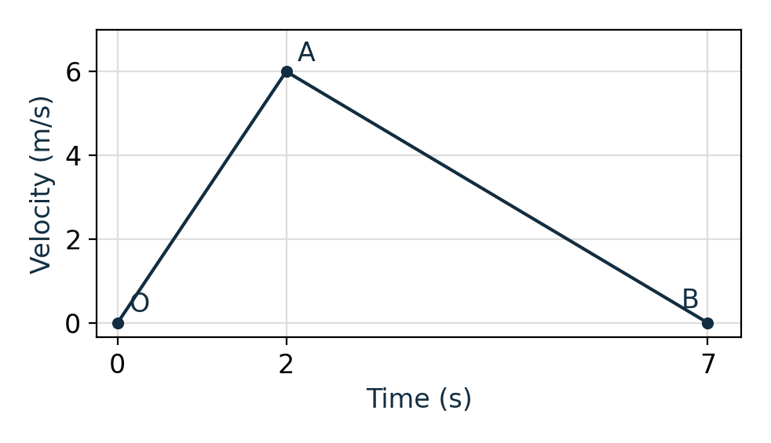
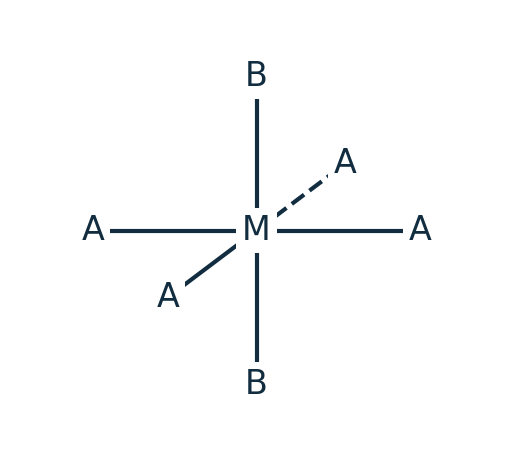
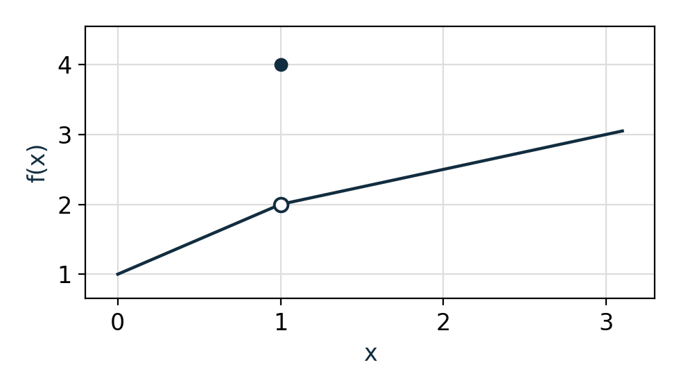
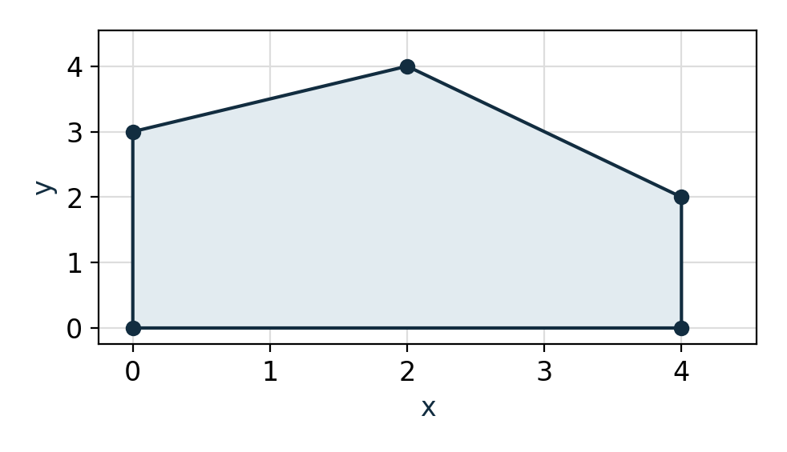
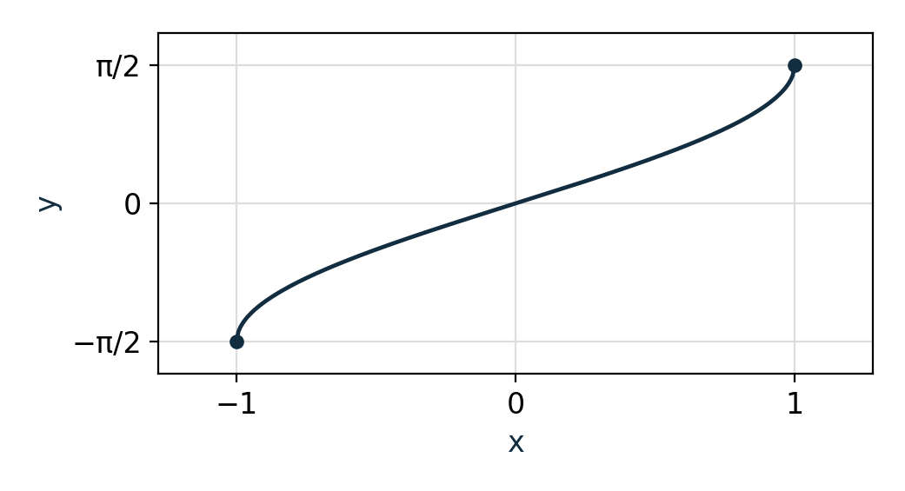

COMEDK UGET Test 20
180 minutes · 180 questions · +1 per correct answer · No negative marking
Physics
Q001. At series resonance a circuit carries 3 A rms at 18 V rms. What total resistance must be added to halve the current without moving the resonance frequency?
A) 6 Ω
B) 3 Ω
C) 12 Ω
D) 18 Ω
Worked solution
Answer: (A) 6 Ω
Why and working: The reactances cancel, so R=18/3=6 Ω. To obtain 1.5 A at 18 V requires total R=12 Ω. Add 6 Ω.
Why not the others: (B) would give 2 A. (C) is the total required. (D) confuses voltage with resistance.
Q002. A velocity trace rises linearly through O and A, then falls to zero at B. From the graph, how much greater is the displacement after A than before A?

A) 3 m
B) 15 m
C) 9 m
D) 6 m
Worked solution
Answer: (C) 9 m
Why and working: The triangles have areas 2×6/2=6 m and 5×6/2=15 m. The second exceeds the first by 9 m.
Why not the others: (A) subtracts time intervals instead. (B) gives the second area alone. (D) gives the first area alone.
Q003. A convex spherical interface with R=+12 cm separates air from glass of index 1.50. At what signed object distance does it form the image at v=+72 cm?
A) −24 cm
B) +48 cm
C) −48 cm
D) −72 cm
Worked solution
Answer: (C) −48 cm
Why and working: Use n₂/v−n₁/u=(n₂−n₁)/R. Hence 1/48−1/u=1/24, giving u=−48 cm.
Why not the others: (A) ignores the finite image term. (B) uses the wrong object-side sign. (D) copies the image magnitude.
Q004. At one screen location the third bright fringe for wavelength 600 nm coincides with the fourth bright fringe for another wavelength in the same double-slit apparatus. What is the other wavelength?
A) 800 nm
B) 600 nm
C) 450 nm
D) 150 nm
Worked solution
Answer: (C) 450 nm
Why and working: Bright positions satisfy y=mλD/d. Equal positions impose 3×600=4λ, so λ=450 nm.
Why not the others: (A) inverts fringe orders. (B) ignores different fringe orders. (D) divides by four without using order three.
Q005. Two tracked markers have positions (2+3t,t) and (8−t,2t) in metres. When their x coordinates first agree for t≥0, how far apart are they?
A) 0 m
B) 3 m
C) 6 m
D) 1.5 m
Worked solution
Answer: (D) 1.5 m
Why and working: Equating x coordinates gives t=6/4=1.5 s. The y separation then equals t, or 1.5 m.
Why not the others: (A) equal x does not imply equal y. (B) uses the full y of the second marker. (C) uses initial x separation.
Q006. A particle with wavelength λ transfers one quarter of its momentum magnitude to another body while keeping its direction. What wavelength does the particle have afterward?
A) 3λ/4
B) 4λ/3
C) 4λ
D) λ/4
Worked solution
Answer: (B) 4λ/3
Why and working: Its remaining momentum is 3p/4, and λ=h/p. Thus the new wavelength is λ/(3/4).
Why not the others: (A) makes wavelength proportional to p. (C) uses the transferred momentum as the remaining value. (D) both reverses scaling and uses the wrong fraction.
Q007. An electron drops from n=4 to n=2 via n=3. Compared with the direct 4→2 photon, what is true of the sum of the two emitted photon energies?
A) It is always double
B) It is equal to the direct photon energy
C) It is smaller by the n=3 energy magnitude
D) It always vanishes
Worked solution
Answer: (B) It is equal to the direct photon energy
Why and working: The intermediate level cancels in (E₄−E₃)+(E₃−E₂)=E₄−E₂.
Why not the others: (A) counts two photons without comparing their energies. (C) does not cancel the intermediate level. (D) both emitted energies are positive.
Q008. A block just starts to slip when a horizontal pulling force slightly exceeds 14 N. It then slides steadily when the force is reduced to 9 N. Which pair gives limiting static friction and kinetic friction?
A) 9 N and 14 N
B) 23 N and 5 N
C) 14 N and 14 N
D) 14 N and 9 N
Worked solution
Answer: (D) 14 N and 9 N
Why and working: At slipping onset the pull matches limiting static friction. Afterward steady speed means the smaller pull balances kinetic friction.
Why not the others: (A) reverses the regimes. (B) adds and subtracts unrelated stage readings. (C) ignores the reduced steady pull.
Q009. Which reaction class can form a heavier nucleus while releasing energy from light nuclei?
A) Fission
B) Ionisation
C) Electronic excitation
D) Fusion
Worked solution
Answer: (D) Fusion
Why and working: Fusion combines light nuclei. If the products bind their nucleons more tightly in total, their rest energy is lower.
Why not the others: (A) splits a nucleus. (B) removes atomic electrons. (C) changes electronic energy without joining nuclei.
Q010. An ideal diode is in series with a 3 Ω resistor and a 6 V source. What current flows after the source is reversed from forward to reverse bias?
A) 2 A in the original direction
B) Zero
C) 2 A in reverse
D) 18 A in reverse
Worked solution
Answer: (B) Zero
Why and working: The reverse-biased ideal diode is an open circuit, so the resistor has no current path.
Why not the others: (A) applies the forward-bias result. (C) treats the diode as a bidirectional short. (D) ignores the diode and misuses Ohm's law.
Q011. In a head-on elastic collision a cart of mass m moving at u strikes a stationary cart of mass M. The first rebounds at speed u/2. What is M/m?
A) 3
B) 2
C) 1/3
D) 1
Worked solution
Answer: (A) 3
Why and working: Elasticity gives separation speed u, so the target moves at u/2. Momentum gives mu=−mu/2+Mu/2 and M=3m.
Why not the others: (B) fails the momentum equation. (C) inverts the mass ratio. (D) equal masses would exchange velocities.
Q012. A dipole has moment p along +x in a uniform field with components (E,E,0). Which component contributes to the torque magnitude, and what is that magnitude?
A) The x component, giving pE
B) Both, giving √2pE
C) Neither, giving zero
D) The y component, giving pE
Worked solution
Answer: (D) The y component, giving pE
Why and working: Torque is p×E. The parallel x term has zero cross product, leaving the perpendicular y term of magnitude pE.
Why not the others: (A) a parallel component does not turn the dipole. (B) uses the full field without the sine factor. (C) the y term gives a nonzero moment.
Q013. A neutral conductor is polarised by a nearby charge and then the charge is removed without any contact. What is the final net charge of the conductor?
A) Zero
B) Negative
C) Positive
D) It doubles
Worked solution
Answer: (A) Zero
Why and working: No charge crosses the conductor boundary. Surface redistribution can occur and then relax without altering the total.
Why not the others: (B) would require gaining electrons. (C) would require net electron loss. (D) the initial total was zero.
Q014. Two rigid rotors have the same angular acceleration under torques in the ratio 2:5. What is the ratio of their moments of inertia in that order?
A) 5:2
B) 2:5
C) 4:25
D) 1:1
Worked solution
Answer: (B) 2:5
Why and working: From τ=Iα, common α makes torque proportional to moment of inertia.
Why not the others: (A) inverts the ratio. (C) squares a linear relation. (D) equal α does not force equal I under differing torques.
Q015. A wire is held at fixed dimensions and obeys R(T)=R₀[1+α(T−T₀)] with α positive. At T₁ the resistance is 1.25R₀. What is σ(T₁)/σ(T₀)?
A) 1.25
B) 0.75
C) 0.25
D) 0.80
Worked solution
Answer: (D) 0.80
Why and working: From R=ρL/A, the resistivity ratio is 1.25 at fixed L and A. Since σ=1/ρ, the conductivity ratio is 1/1.25=0.80.
Why not the others: (A) uses the direct resistance ratio. (B) subtracts the relative resistance increase from conductivity. (C) gives the relative resistance increase.
Q016. A positive particle moves along +x in a field B along +y. A uniform electric force alone would point along +z. What is the relation of the magnetic force to it?
A) It points in the same direction
B) It opposes it
C) It is along +y
D) It is zero
Worked solution
Answer: (A) It points in the same direction
Why and working: For positive charge the magnetic force is qv×B, and +x cross +y gives +z.
Why not the others: (B) uses the cross product in reverse order. (C) the force is perpendicular to B. (D) the velocity and B are perpendicular.
Q017. Two satellites move in circular orbits around one planet. The outer satellite takes twice as long to travel the same arc length as the inner one. What is the outer-to-inner orbital radius ratio?
A) 4
B) 2
C) 1/4
D) √2
Worked solution
Answer: (A) 4
Why and working: Their speeds are in ratio 1:2. Circular speed scales as 1/√r, so halving speed makes radius four times larger.
Why not the others: (B) applies a linear relation. (C) reverses inner and outer. (D) takes a square root instead of squaring.
Q018. A weak field is applied to a paramagnet. Which response distinguishes ordinary paramagnetism from strong ferromagnetic remanence?
A) It necessarily retains a large moment after removal
B) A small induced moment generally disappears when the field is removed
C) It always has a large moment opposite to the field
D) It changes its chemical identity in the field
Worked solution
Answer: (B) A small induced moment generally disappears when the field is removed
Why and working: Ordinary paramagnetic alignment is induced by the field and is lost without it under thermal motion.
Why not the others: (A) describes remanence of ferromagnets. (C) the induced paramagnetic response is along the field. (D) magnetic alignment does not alter elemental identity.
Q019. A drive current through coil A is held constant after ramping up. Coil B remains nearby, open and stationary. When does B show mutual induction emf?
A) Only during the steady-current interval
B) At the same value during ramp and steady operation
C) Never because it is open
D) During the ramp only
Worked solution
Answer: (D) During the ramp only
Why and working: The emf is −M times the rate of change of A's current. It vanishes at steady current even though B links a nonzero flux.
Why not the others: (A) steady flux does not induce emf. (B) the ramp has nonzero derivative. (C) an open coil can have terminal emf.
Q020. A film has two identical exposed faces. Each gains area 4 cm² at surface tension 0.025 N/m. How much reversible surface work is needed?
A) 2×10⁻⁵ J
B) 1×10⁻⁵ J
C) 0.20 J
D) 2×10⁻³ J
Worked solution
Answer: (A) 2×10⁻⁵ J
Why and working: The total area rise is 8×10⁻⁴ m². Multiplying by 0.025 J/m² gives 2×10⁻⁵ J.
Why not the others: (B) counts one face. (C) ignores square-centimetre conversion. (D) uses the wrong area conversion factor.
Q021. The rms current phasor has in-phase component 6 A and wattless component 8 A. At voltage 120 V rms, what real power is delivered?
A) 960 W
B) 1200 W
C) 720 W
D) 1680 W
Worked solution
Answer: (C) 720 W
Why and working: Real power uses only the in-phase current. Thus P=120×6=720 W, although total current is 10 A.
Why not the others: (A) uses the quadrature component. (B) uses apparent power. (D) adds perpendicular currents as scalars.
Q022. A glass lens has nonzero power in air. It is immersed in a liquid whose index is larger than the lens material's index. What happens to the sign of its power relative to air?
A) It stays positive for every shape
B) It reverses
C) It necessarily becomes zero
D) It depends only on object distance
Worked solution
Answer: (B) It reverses
Why and working: The lens-maker curvature factor is unchanged while n_lens/n_medium−1 reverses sign. Index matching, rather than a greater liquid index, would give zero.
Why not the others: (A) ignores the negative index factor. (C) requires equal indices. (D) power is a lens and medium property.
Q023. A horizontal sealed air layer separates a warm plate from a cool one. Which arrangement suppresses natural convection through buoyancy?
A) The warm plate is above the cool one
B) The warm plate is below the cool one
C) Both orientations drive equally strong circulation
D) Buoyancy is independent of the temperature difference
Worked solution
Answer: (A) The warm plate is above the cool one
Why and working: Warm air is less dense. With warming above, the lighter air is already over the colder denser air, so a vertical displacement is opposed and the layer is stable.
Why not the others: (B) warms the bottom and creates buoyant rising air. (C) the direction of heating matters. (D) the temperature difference produces a density contrast.
Q024. At the centre of a single-slit diffraction pattern, what is the phase relationship between the Huygens contributions across the slit for normal incidence?
A) The two halves are in opposite phase at the centre
B) Each edge independently contributes zero electric field
C) The centre owes its brightness to neighbouring dark points
D) They arrive in phase at the centre
Worked solution
Answer: (D) They arrive in phase at the centre
Why and working: Along the forward normal the paths have no difference across the aperture in the far-field model. The contributions therefore add with the same phase.
Why not the others: (A) would produce cancellation rather than the central maximum. (B) an individual contribution need not vanish. (C) interference depends on waves arriving at the point being observed.
Q025. A half-wave rectifier and full-wave rectifier receive the same sinusoid of period 20 ms. What are their output pulse intervals, respectively?
A) 10 ms and 20 ms
B) 20 ms and 20 ms
C) 40 ms and 20 ms
D) 20 ms and 10 ms
Worked solution
Answer: (D) 20 ms and 10 ms
Why and working: The half-wave circuit passes one lobe per input cycle, while full-wave gives two equally spaced lobes.
Why not the others: (A) swaps pulse counts. (B) misses the second full-wave lobe. (C) doubles the input period incorrectly.
Q026. A gas executes a cycle. It absorbs 70 J on one stage and rejects 100 J on another, with no other heat transfer. What is the net work done by the gas?
A) −30 J
B) +30 J
C) 170 J
D) Zero
Worked solution
Answer: (A) −30 J
Why and working: The cycle returns internal energy to its initial value. Thus net work by the gas equals net heat, 70−100=−30 J.
Why not the others: (B) gives work on the gas. (C) adds the heat magnitudes. (D) zero ΔU does not require zero work.
Q027. A closed surface initially encloses +q and −2q. The −2q charge moves outside. What is the change in total outward flux, final minus initial?
A) −q/ε₀
B) +q/ε₀
C) Zero
D) +2q/ε₀
Worked solution
Answer: (D) +2q/ε₀
Why and working: Enclosed charge changes from −q to +q. Gauss's law turns the +2q change into +2q/ε₀.
Why not the others: (A) gives the initial rather than changed flux. (B) gives the final rather than changed flux. (C) a charge crosses the boundary.
Q028. A dielectric fills an isolated charged capacitor, increasing its capacitance by factor four. What happens to stored electrical energy?
A) It rises fourfold
B) It remains fixed
C) It falls to one quarter
D) It falls to one sixteenth
Worked solution
Answer: (C) It falls to one quarter
Why and working: Free charge Q stays fixed during insertion. At fixed Q, U=Q²/(2C), so quadrupling C quarters U.
Why not the others: (A) uses fixed voltage rather than fixed charge. (B) energy can be exchanged through forces during insertion. (D) squares the capacitance ratio.
Q029. Frequencies of two tuning forks differ by 3 Hz. Raising the lower fork by 5 Hz without changing the other gives what final beat rate?
A) 2 Hz
B) 8 Hz
C) 3 Hz
D) 5 Hz
Worked solution
Answer: (A) 2 Hz
Why and working: The changed frequency first closes the original 3 Hz gap and then exceeds the other by 2 Hz. Beat rate is the absolute difference.
Why not the others: (B) adds the increase to the gap in the wrong direction. (C) the frequency separation changes. (D) is the applied shift rather than the gap.
Q030. A cell gives 5.0 V at 1 A discharge and 4.6 V at 3 A discharge. What is its emf?
A) 5.0 V
B) 4.8 V
C) 5.6 V
D) 5.2 V
Worked solution
Answer: (D) 5.2 V
Why and working: The 0.4 V reduction over a 2 A increase gives r=0.20 Ω. Then E=V+Ir=5.0+0.20=5.2 V.
Why not the others: (A) confuses loaded terminal voltage with emf. (B) uses the wrong sign for the internal drop. (C) uses 3 A with the 1 A terminal reading.
Q031. A straight 0.5 m conductor carrying 4 A lies at 30° to B. Changing its orientation to 90° doubles the magnetic force. What factor of current would restore the original force at 90°?
A) 2
B) √3/2
C) 1/2
D) 1
Worked solution
Answer: (C) 1/2
Why and working: Since F=BIL sin θ and sin 30°=1/2, matching the old perpendicular current component requires half the original current.
Why not the others: (A) reinforces the force increase. (B) uses cosine of the old angle. (D) leaves the force doubled.
Q032. Neglect air resistance. A projectile has horizontal launch component 12 m/s and vertical launch component 5 m/s. At a point where its vertical velocity is −5 m/s, what is its speed?
A) 12 m/s
B) 13 m/s
C) 7 m/s
D) 17 m/s
Worked solution
Answer: (B) 13 m/s
Why and working: The horizontal component stays 12 m/s without drag. Speed is the norm √(12²+5²)=13 m/s.
Why not the others: (A) omits the nonzero vertical component. (C) subtracts components as scalars. (D) adds component magnitudes directly.
Q033. Why can warming a permanent magnet past its Curie point erase its persistent magnetisation without destroying the solid?
A) All its atoms become ions and escape
B) The supply field is transformed into gravitational force
C) Long-range magnetic order is lost by thermal agitation
D) Magnetic order is impossible only below Curie temperature
Worked solution
Answer: (C) Long-range magnetic order is lost by thermal agitation
Why and working: Thermal motion disrupts spontaneous magnetic order above the Curie temperature. Crystalline material can remain present.
Why not the others: (A) the loss does not require vaporisation. (B) magnetic forces do not turn into gravity. (D) reverses the relevant temperature side.
Q034. In an AC generator operating with maximum linked flux Φ₀ per turn, the flux through N turns changes from zero to its positive maximum in one quarter-period t. What is the magnitude of average emf during that quarter?
A) NΦ₀/t
B) 4NΦ₀/t
C) Zero
D) Φ₀/(Nt)
Worked solution
Answer: (A) NΦ₀/t
Why and working: Faraday's law divides the change of linkage NΦ₀ by the actual interval t, which is already the quarter-period.
Why not the others: (B) counts the quarter-period factor twice. (C) a nonzero total change gives nonzero average emf. (D) turns multiply linkage.
Q035. Why can a thin lubricating film between sliding solid surfaces reduce friction even though the film itself is viscous?
A) It prevents any mechanical energy from being dissipated
B) It necessarily increases solid-to-solid contact
C) It removes the normal load by eliminating gravity
D) It reduces direct asperity contact while the remaining resistance can be fluid shear
Worked solution
Answer: (D) It reduces direct asperity contact while the remaining resistance can be fluid shear
Why and working: Separating the surfaces can reduce the larger resistance from direct solid contact. Viscous drag can still remain.
Why not the others: (A) fluid shear can dissipate energy. (B) separation suppresses direct contacts. (C) weight remains present.
Q036. A thin lens in air forms a real image at twice the object distance. If the distances add to 45 cm, what lens power is required?
A) +10 D
B) +5 D
C) −10 D
D) +20 D
Worked solution
Answer: (A) +10 D
Why and working: Object and image distances are 15 and 30 cm, so 1/f=1/15+1/30=1/10 cm⁻¹. The focal length is +0.10 m.
Why not the others: (B) uses the wrong focal distance. (C) the real image of the real object requires positive power here. (D) uses half the correct focal length.
Q037. A long uniformly charged wire is enclosed by a cylinder of length L. A second cylinder is coaxial with half the radius and twice the length. What is the flux ratio second:first?
A) 1
B) 2
C) 1/2
D) 4
Worked solution
Answer: (B) 2
Why and working: Gauss's law gives flux λL/ε₀. The cylinder radius modifies field and curved area reciprocally, but doubling enclosed length doubles flux.
Why not the others: (A) uses unchanged side area without the field change. (C) uses the radius factor alone. (D) counts the field increase twice.
Q038. Two equal masses move on perpendicular tracks at speeds 6 and 8 m/s and stick. What is the speed of the composite?
A) 10 m/s
B) 7 m/s
C) 14 m/s
D) 5 m/s
Worked solution
Answer: (D) 5 m/s
Why and working: Total momentum magnitude is m√(6²+8²)=10m. Dividing by combined mass 2m gives 5 m/s.
Why not the others: (A) forgets the combined mass. (B) averages speed magnitudes in place of vectors. (C) adds perpendicular speeds.
Q039. Two identical capacitors in series are replaced by the same pair in parallel at unchanged battery voltage. By what factor does the total charge taken from the battery change?
A) Four
B) Two
C) One half
D) One
Worked solution
Answer: (A) Four
Why and working: The equivalent capacitances are C/2 and 2C. At fixed V, Q scales in their ratio 2C/(C/2)=4.
Why not the others: (B) compares the parallel pair with one capacitor. (C) inverts only part of the change. (D) topology changes equivalent capacitance.
Q040. Two identical cells in aiding series have open-circuit voltage 6 V. What open-circuit voltage does a correct same-polarity parallel arrangement give?
A) 6 V
B) 12 V
C) 3 V
D) Zero
Worked solution
Answer: (C) 3 V
Why and working: Each cell contributes 3 V. Parallel identical emfs impose their common 3 V, with no load current.
Why not the others: (A) adds emfs in parallel. (B) doubles the series result. (D) equal polarities reinforce rather than cancel terminal voltage.
Q041. A 5 kg rigid body has moment of inertia 20 kg·m² about a stated axis. How much of its mass would a point-particle model put at radius 2 m to reproduce this moment?
A) 2.5 kg
B) All 5 kg
C) 10 kg
D) 20 kg
Worked solution
Answer: (B) All 5 kg
Why and working: A point mass at radius r contributes mr². Setting m×4=20 gives 5 kg, so the radius is its radius of gyration.
Why not the others: (A) would produce only 10 kg·m². (C) would produce twice the target. (D) copies inertia as a mass.
Q042. Two long wires initially carry equal currents in the same direction. Only one current is reversed. What happens to their interaction?
A) Attraction becomes repulsion with twice the magnitude
B) Attraction becomes repulsion with the same force magnitude
C) It stays attractive with the same magnitude
D) Their interaction vanishes
Worked solution
Answer: (B) Attraction becomes repulsion with the same force magnitude
Why and working: The relative sense changes from parallel to antiparallel. The product of the current magnitudes and their separation stay fixed.
Why not the others: (A) no magnitude factor changes. (C) reversing just one changes the relative sense. (D) both currents remain nonzero.
Q043. An ideal transformer passes 90 W to a resistive load at 15 V rms. The primary draws 0.75 A rms. What is the primary voltage?
A) 67.5 V
B) 120 V
C) 15 V
D) 6 V
Worked solution
Answer: (B) 120 V
Why and working: Equal input and output power gives V_p×0.75=90. Thus V_p=120 V.
Why not the others: (A) multiplies power by current. (C) copies the output voltage. (D) is the secondary current's numerical value.
Q044. For the same liquid in the same glass, one capillary of radius r shows no rise at contact angle 90°. Could a narrower capillary of identical surface restore a nonzero equilibrium rise at that same angle?
A) No, because cos 90° is zero at either radius
B) Yes, any halving of radius creates a finite rise
C) Yes, narrower always changes the contact angle to zero by definition
D) It must give a finite depression
Worked solution
Answer: (A) No, because cos 90° is zero at either radius
Why and working: The capillary term is proportional to cos θ/r. With finite r and θ=90°, the vertical surface-tension component vanishes.
Why not the others: (B) a smaller denominator cannot make a zero numerator nonzero. (C) the angle is explicitly unchanged. (D) depression would require negative cosine.
Q045. A +6 D lens in contact with a diverging lens gives an afocal thin combination. What focal length does the diverging lens have?
A) −1/6 m
B) +1/6 m
C) −6 m
D) Zero
Worked solution
Answer: (A) −1/6 m
Why and working: Afocal contact requires zero net power. The diverging power is −6 D and its focal length is its reciprocal in metres.
Why not the others: (B) would add positive power. (C) uses power as focal length. (D) zero focal length does not mean zero power.
Q046. Two infinite insulating planes carry opposite equal surface charge densities, +σ and −σ. Where is the electric field magnitude nonzero in the ideal model?
A) On both outer sides only
B) Everywhere with the same sign
C) Nowhere
D) Between the planes only
Worked solution
Answer: (D) Between the planes only
Why and working: Between the planes both individual fields point from + to − and add. On either exterior side the equal contributions oppose.
Why not the others: (A) reverses the addition regions. (B) outside the fields cancel. (C) the gap has reinforcement.
Q047. Two identical black surfaces at 300 K and 600 K radiate freely. Ignoring absorption from their surroundings, how does hot-to-cool emitted power per area compare?
A) 4:1
B) 2:1
C) 16:1
D) 8:1
Worked solution
Answer: (C) 16:1
Why and working: Stefan's law gives emitted power per area proportional to T⁴. The absolute temperature ratio is two.
Why not the others: (A) uses a square dependence. (B) uses a linear dependence. (D) uses a cubic dependence.
Q048. A battery remains attached to a parallel-plate capacitor. Its spacing is then halved and a dielectric with relative permittivity 2 completely fills the gap. Which happens to the average electric field?
A) It quadruples
B) It halves
C) It doubles
D) It stays fixed
Worked solution
Answer: (C) It doubles
Why and working: The battery fixes voltage and E=V/d, yielding a factor two. The dielectric affects free charge but does not change this voltage-distance relation.
Why not the others: (A) gives the capacitance factor. (B) inverts the spacing dependence. (D) fixed voltage is not fixed average field.
Q049. A junction receives current I from a source and divides into two parallel resistive paths of 2 Ω and 6 Ω. What fraction of I goes through the 2 Ω path?
A) 1/4
B) 1/2
C) 3/4
D) 2/3
Worked solution
Answer: (C) 3/4
Why and working: Both branches share voltage, so their currents are inversely proportional to resistance in ratio 3:1. The larger branch share is 3/(3+1).
Why not the others: (A) gives the 6 Ω branch share. (B) resistances are unequal. (D) uses a wrong total branch ratio.
Q050. Uniform circular motion has speed 6 m/s on radius 3 m. If both speed and radius are doubled, how does centripetal acceleration change?
A) It halves
B) It doubles
C) It is unchanged
D) It quadruples
Worked solution
Answer: (B) It doubles
Why and working: Acceleration v²/r gains factor 4 in the numerator and factor 2 in the denominator.
Why not the others: (A) inverts the net factor. (C) uses v/r rather than v²/r. (D) uses the speed change without radius change.
Q051. A loop has magnetic moment m in a uniform field B. Its torque is zero in two orientations. Which orientation has lower potential energy?
A) Moment antiparallel to the field
B) Moment parallel to the field
C) Moment perpendicular to the field
D) Both zero-torque orientations have identical energy
Worked solution
Answer: (B) Moment parallel to the field
Why and working: The zero-torque alignments give U=−mB and +mB, respectively. Parallel alignment minimises energy.
Why not the others: (A) has the higher energy. (C) is not a zero-torque orientation. (D) equal torque does not imply equal energy.
Q052. A ray crosses a prism of apex angle 50°. Its first internal refraction angle is 18°. What is its internal incidence angle at the second face?
A) 18°
B) 50°
C) 32°
D) 68°
Worked solution
Answer: (C) 32°
Why and working: From prism geometry the two internal angles add to the apex angle. Therefore the second angle is 50−18.
Why not the others: (A) assumes minimum deviation without evidence. (B) gives the prism angle alone. (D) adds instead of subtracts.
Q053. A frictionless banked bend is designed for speed v. A second bend has four times its radius but uses the same banking angle. What is the design speed on the second bend?
A) 4v
B) v/2
C) 2v
D) v
Worked solution
Answer: (C) 2v
Why and working: The no-friction banking condition is tan θ=v²/(rg). Fixed θ gives speed proportional to the square root of radius.
Why not the others: (A) uses direct linear scaling. (B) reverses the radius change. (D) the same angle does not fix speed at different radii.
Q054. A point charge q at the centre of a thin spherical shell gives flux q/ε₀ through a concentric surface just inside the shell. The flux just outside is −2q/ε₀. What is the shell's charge?
A) −2q
B) −q
C) −3q
D) +3q
Worked solution
Answer: (C) −3q
Why and working: Gauss's law gives enclosed charges q and −2q at the two radii. The difference belongs to the shell: −2q−q=−3q.
Why not the others: (A) gives the total charge including the centre. (B) misses part of the decrease. (D) reverses the subtraction.
Q055. An isolated capacitor with charge Q is discharged until its charge is Q/3. At unchanged capacitance, what fraction of its original energy is lost?
A) 1/9
B) 8/9
C) 2/3
D) 1/3
Worked solution
Answer: (B) 8/9
Why and working: Energy scales as Q² at fixed capacitance. The remaining fraction is 1/9 and the lost fraction is its complement.
Why not the others: (A) gives the remaining fraction. (C) uses a linear drop in charge. (D) uses the remaining charge fraction.
Q056. For equal mass and outer radius, which tabulated moment is smaller about a central axis: a uniform disc about its perpendicular axis or a thin ring about its perpendicular axis?
A) The ring's, by a factor of two
B) The disc's, by a factor of two
C) They are equal
D) The disc's, by a factor of four
Worked solution
Answer: (B) The disc's, by a factor of two
Why and working: The disc has I=MR²/2 while the ring has I=MR². The ratio is one half.
Why not the others: (A) reverses the ordering. (C) mass distribution changes the coefficient. (D) uses the wrong disc coefficient.
Q057. A Wheatstone bridge has a 9 V top node and a 0 V bottom node. Its left arm has 3 Ω above the midpoint and 6 Ω below it. Its right arm has 6 Ω above the midpoint and 3 Ω below it. With the detector disconnected, what is the left midpoint potential minus the right one?
A) +3 V
B) −3 V
C) 0 V
D) +6 V
Worked solution
Answer: (A) +3 V
Why and working: Each branch carries 9/9=1 A. The lower resistors put the two midpoint potentials at 6 V and 3 V, so the requested difference is +3 V.
Why not the others: (B) subtracts in reverse order. (C) the resistance ratios differ and the bridge is unbalanced. (D) uses the left potential alone.
Q058. A voltmeter is made by placing a large resistor in series with a galvanometer. What happens to the current sensitivity of the galvanometer movement itself?
A) It grows in proportion to the added resistance
B) It vanishes
C) It is unchanged
D) It becomes a sensitivity per unit voltage without the current relation
Worked solution
Answer: (C) It is unchanged
Why and working: Mechanical deflection per coil current is a property of the original movement. Series resistance reduces the coil current for a given applied voltage.
Why not the others: (A) resistor changes terminal voltage scaling, not deflection per ampere. (B) coil deflection still responds to current. (D) the movement retains its current calibration.
Q059. A liquid drop of radius r and surface tension γ has the same excess internal pressure as a soap bubble whose surface tension is 3γ/4. What is the soap bubble's radius?
A) 3r/4
B) 2r/3
C) 2r
D) 3r/2
Worked solution
Answer: (D) 3r/2
Why and working: Equate the drop pressure 2γ/r to the thin bubble pressure 4(3γ/4)/R. This gives 2γ/r=3γ/R and R=3r/2.
Why not the others: (A) uses the drop's one-interface factor for both objects. (B) inverts the radius ratio. (C) ignores the difference in surface tension.
Q060. A compound microscope gives an eyepiece factor 6 and objective enlargement 7 for a particular adjustment. If a second objective provides half that enlargement under the same eyepiece setting, what total magnifying power results?
A) 42
B) 3.5
C) 12
D) 21
Worked solution
Answer: (D) 21
Why and working: The new objective factor is 7/2. Multiply it by the unchanged eyepiece factor 6 to obtain 21.
Why not the others: (A) gives the old total. (B) gives the new objective factor only. (C) does not combine the two factors correctly.
Chemistry
Q061. At fixed temperature, a solution with a nonvolatile solute has solvent mole fraction 0.92. Another has twice as many solvent moles per solute mole. What is the second solution's relative vapour-pressure lowering?
A) 1/24
B) 0.04
C) 0.16
D) 1/12
Worked solution
Answer: (A) 1/24
Why and working: The first ratio solvent:solute is 0.92:0.08=23:2. Doubling it gives 23:1, so the new solute fraction is 1/24.
Why not the others: (B) halves the fraction without updating total moles. (C) predicts the opposite trend. (D) uses the ratio to solvent rather than to total.
Q062. Equal heat is supplied to 100 g of each of two solids. Temperatures rise by 5 K and 15 K, respectively. Compare their specific heat capacities.
A) The first has three times the second
B) The second has three times the first
C) They are equal
D) The first has nine times the second
Worked solution
Answer: (A) The first has three times the second
Why and working: At equal Q and m, c is inversely proportional to ΔT. The first rises by one third as much.
Why not the others: (B) inverts the inverse dependence. (C) equal heat can cause unequal rises. (D) squares a linear ratio.
Q063. The limiting molar conductivities of KCl, KNO₃ and NaCl are 150, 145 and 126 S·cm²/mol respectively. Which value follows for NaNO₃?
A) 121 S·cm²/mol
B) 131 S·cm²/mol
C) 155 S·cm²/mol
D) 271 S·cm²/mol
Worked solution
Answer: (A) 121 S·cm²/mol
Why and working: By independent ion migration, replacing Cl⁻ with NO₃⁻ changes the limiting conductivity by 145−150=−5 for either cation. Apply this to NaCl to get 126−5=121 S·cm²/mol.
Why not the others: (B) replaces nitrate by chloride instead. (C) retains the potassium salt's contribution rather than using sodium. (D) adds two salts without cancelling common ions.
Q064. A first-order reactant falls to one eighth of its initial concentration after 15 min. How long does it take to fall from one half to one sixteenth?
A) 20 min
B) 15 min
C) 10 min
D) 5 min
Worked solution
Answer: (B) 15 min
Why and working: Three half-lives fit in 15 min, so each takes 5 min. Half to one sixteenth is also a factor of eight, requiring three more half-lives.
Why not the others: (A) uses time from the start to one sixteenth. (C) counts only two halvings. (D) counts just one halving.
Q065. For acid H₂A, Kₐ₁ is much larger than Kₐ₂. Near the first dissociation stage, which species releases the second proton?
A) H₂A in the same single step
B) A²⁻
C) H₃O⁺ from the first step alone
D) HA⁻
Worked solution
Answer: (D) HA⁻
Why and working: First H₂A loses H⁺ to form HA⁻. The second equilibrium is HA⁻ giving H⁺ and A²⁻.
Why not the others: (A) describes the first loss. (B) is the product of the second loss. (C) does not describe acid A's second dissociation.
Q066. Which observation distinguishes an interstitial carbide from a substitutional alloy of comparable-sized metal atoms?
A) Carbon replaces every metal atom on its normal lattice site
B) The sample must contain a liquid carbon phase
C) Small carbon atoms occupy voids while the metal framework remains in place
D) The two elements cannot share one solid structure
Worked solution
Answer: (C) Small carbon atoms occupy voids while the metal framework remains in place
Why and working: Interstitial atoms occupy spaces between host atoms. Substitutional atoms replace host atoms at lattice positions.
Why not the others: (A) describes site replacement. (B) a carbide can be solid throughout. (D) a host lattice can accommodate small guests.
Q067. Two octahedral ions each have three d electrons. Can increasing the ligand field alone force an electron pair in their ground-state configurations?
A) Yes, two of the three electrons pair in one lower orbital
B) No, all three can separately occupy the lower t₂g orbitals
C) Yes, all three electrons occupy one lower orbital
D) No, because all three electrons fill e_g first
Worked solution
Answer: (B) No, all three can separately occupy the lower t₂g orbitals
Why and working: The octahedral lower group contains three orbitals. Hund's rule places one electron in each; there is no need to promote an electron or compete with pairing across the splitting.
Why not the others: (A) pairing within the lower set is unnecessary. (C) one orbital can hold at most two electrons. (D) the e_g group is the higher set.
Q068. When a nucleophile approaches a carbonyl, the π pair shifts onto oxygen during attack. Which effect describes this temporary complete transfer?
A) Inductive effect through a saturated chain only
B) Electromeric effect
C) A change of atomic number
D) Permanent transfer of a proton by resonance
Worked solution
Answer: (B) Electromeric effect
Why and working: An attacking reagent causes a temporary complete displacement of a π electron pair. Induction is partial polarisation through σ bonds.
Why not the others: (A) does not describe the temporary π-pair shift. (C) electronic rearrangement leaves nuclei unchanged. (D) resonance does not move nuclei.
Q069. Chlorobenzene nitrates more slowly than benzene yet gives mainly ortho and para products. What must an explanation distinguish?
A) Overall rate relative to benzene from relative preference among sites on chlorobenzene
B) Only the boiling points of the products
C) The number of chlorine isotopes in the reactant
D) A faster meta reaction than every ortho and para pathway
Worked solution
Answer: (A) Overall rate relative to benzene from relative preference among sites on chlorobenzene
Why and working: Inductive withdrawal deactivates the ring overall. Lone-pair donation can still stabilise ortho and para substitution intermediates more than meta.
Why not the others: (B) boiling points do not control the electronic orientation. (C) isotopes do not account for the directing effect. (D) contradicts the stated product preference.
Q070. Two alcohol feedstocks are used to make formaldehyde and ethanal by controlled oxidation. Which gives ethanal?
A) Methanol
B) Both give formaldehyde and ethanal in the same proportions
C) Neither because primary alcohols cannot form aldehydes
D) Ethanol
Worked solution
Answer: (D) Ethanol
Why and working: The two-carbon alcohol ethanol gives the two-carbon aldehyde. Oxidation of methanol keeps its one carbon in methanal.
Why not the others: (A) gives formaldehyde. (B) retention of carbon count distinguishes them. (C) primary alcohol oxidation can give aldehydes.
Q071. When long alkane molecules are heated with little oxygen, smaller alkanes and alkenes are obtained. Which type of change is being used?
A) Complete combustion
B) Pyrolysis or cracking
C) Simple fractional separation without reaction
D) Hydrogen bonding
Worked solution
Answer: (B) Pyrolysis or cracking
Why and working: Thermal bond cleavage breaks long chains into smaller hydrocarbons when full oxidation is avoided.
Why not the others: (A) would mainly produce carbon dioxide and water. (C) cannot turn one molecular size into smaller molecules. (D) does not account for bond cleavage.
Q072. Two ethanal molecules form an aldol addition product before dehydration. Which group of the accepting molecule ends up as an alcohol group?
A) Its original carbonyl oxygen
B) Its original methyl carbon
C) Its aldehydic hydrogen alone
D) Its new C–C bond
Worked solution
Answer: (A) Its original carbonyl oxygen
Why and working: The donor enolate attacks the acceptor carbonyl carbon. The acceptor oxygen becomes alkoxide and is protonated to the hydroxyl group.
Why not the others: (B) that carbon remains part of the skeleton. (C) the oxygen comes from the original C=O. (D) a carbon–carbon bond is not OH.
Q073. What change lets aniline form chlorobenzene through a diazonium intermediate?
A) Hydrolyse the diazonium intermediate with warm water
B) Replace the aryl diazonium group with chloride using copper(I) chloride
C) Protonate aniline and isolate its hydrochloride only
D) Add ammonia to the diazonium solution to make chlorine atoms
Worked solution
Answer: (B) Replace the aryl diazonium group with chloride using copper(I) chloride
Why and working: The aryl diazonium group is replaced by Cl in a Sandmeyer reaction and nitrogen leaves.
Why not the others: (A) gives phenol. (C) only changes the amine's protonation. (D) ammonia does not supply chloride substitution.
Q074. One mole of a compound contains 24 g C and 6 g H and has molar mass 46 g/mol. Its only other element is O. What percentage of its mass is oxygen?
A) 52.2% approximately
B) 13.0% approximately
C) 34.8% approximately
D) 65.2% approximately
Worked solution
Answer: (C) 34.8% approximately
Why and working: The oxygen contribution is 46−24−6=16 g per mole. Its percentage is 100×16/46≈34.8%.
Why not the others: (A) gives the carbon percentage. (B) gives the hydrogen percentage. (D) gives combined carbon and hydrogen.
Q075. Which storage polymer in animals provides numerous enzyme-accessible chain ends because it is highly branched?
A) Glycogen
B) Cellulose
C) Amylose
D) Lactose
Worked solution
Answer: (A) Glycogen
Why and working: Glycogen is the extensively branched glucose reserve of animal tissues. Branching creates many ends for mobilisation.
Why not the others: (B) is a structural plant polymer. (C) is the mostly linear fraction of starch. (D) contains only two sugars.
Q076. A dilute solution shows freezing depression 0.60 K and boiling elevation 0.15 K. If its solvent remains the same and the concentration of effective particles doubles in molality units, by how much is the new boiling-to-freezing temperature interval larger than that of the pure solvent?
A) 0.75 K
B) 1.50 K
C) 0.90 K
D) 0.30 K
Worked solution
Answer: (B) 1.50 K
Why and working: Both shifts double to 1.20 and 0.30 K. They act in opposite directions on the two endpoints, increasing the interval by their sum.
Why not the others: (A) uses the original shifts. (C) subtracts the shift magnitudes. (D) counts only the boiling shift.
Q077. An electron and a nonrelativistic particle of mass 4mₑ have the same kinetic energy. What is the heavier particle's de Broglie wavelength relative to the electron's?
A) One quarter
B) Two times
C) The same
D) One half
Worked solution
Answer: (D) One half
Why and working: Since K=p²/(2m) is common, the heavier particle has twice the momentum. Its wavelength h/p is therefore half as large.
Why not the others: (A) uses a linear dependence on mass at equal energy. (B) reverses the momentum–wavelength relation. (C) equal kinetic energy does not fix momentum.
Q078. Two plating runs use Cu²⁺ and have the same current efficiency. The first uses 4 A for 30 s and the second uses 2 A until it deposits the same copper mass. How long is the second run?
A) 15 s
B) 30 s
C) 60 s
D) 120 s
Worked solution
Answer: (C) 60 s
Why and working: Equal deposited mass of the same ion requires equal charge. The first passes 120 C, and 120/2=60 s.
Why not the others: (A) inverts the time-current relation. (B) ignores the current change. (D) gives the charge number as seconds.
Q079. If a large fraction of molecular collisions have suitable geometry but little kinetic energy, what limits the reaction rate in the collision model?
A) Every correctly oriented collision must form product
B) Too few collisions exceed the activation requirement
C) Lack of geometry is the only remaining barrier
D) Low kinetic energy raises the concentration automatically
Worked solution
Answer: (B) Too few collisions exceed the activation requirement
Why and working: Orientation is just one requirement. The relative energy must be sufficient to cross the barrier.
Why not the others: (A) ignores activation energy. (C) orientation is already given as suitable. (D) energy and concentration are separate variables.
Q080. What temporary systematic element name is built from roots un, un and tri for Z=113 before permanent naming?
A) Ununbium
B) Ununtrium
C) Unnilennium
D) Unbiunium
Worked solution
Answer: (B) Ununtrium
Why and working: The digit roots 1,1,3 give un-un-tri, with the systematic element ending.
Why not the others: (A) uses the digit root for two at the end. (C) contains roots for a different number. (D) changes the sequence.
Q081. Starting with Cr₂O₇²⁻ on one side and 2CrO₄²⁻ on the other, where should H⁺ and H₂O be placed to balance the interconversion?
A) Place one H⁺ on the chromate side and H₂O on the dichromate side
B) Place 2H⁺ on the dichromate side and H₂O on the chromate side
C) Place 2H⁺ on the chromate side and H₂O on the dichromate side
D) Place 2H⁺ and H₂O together on the chromate side
Worked solution
Answer: (C) Place 2H⁺ on the chromate side and H₂O on the dichromate side
Why and working: Acid favours dichromate: 2CrO₄²⁻+2H⁺ ⇌ Cr₂O₇²⁻+H₂O. Each side has eight oxygens, two hydrogens and net charge −2.
Why not the others: (A) leaves hydrogen and charge unbalanced. (B) leaves oxygen unbalanced and consumes acid in the wrong direction. (D) fails oxygen and charge conservation.
Q082. In the octahedral diagram, which interchange would convert the arrangement of the two B ligands from trans to cis?

A) Swap the two B ligands with each other
B) Swap two equatorial A ligands with each other
C) Swap the upper B with one equatorial A
D) Turn the entire diagram through 90°
Worked solution
Answer: (C) Swap the upper B with one equatorial A
Why and working: Replacing just one axial B by an equatorial B puts the two B–M directions at right angles. In a trans geometry they are opposite.
Why not the others: (A) identical B ligands leave the geometry unchanged. (B) swapping A ligands leaves both B sites fixed. (D) rigid rotation preserves the angle.
Q083. Why do the two N–O bonds in a nitrite ion have the same measured length even though one Lewis contributor shows a single and a double bond?
A) The ion consists of two independent molecules
B) The two oxygen nuclei repeatedly change elements
C) The single bond is physically absent in the real ion
D) The π bond is delocalised over the two N–O positions
Worked solution
Answer: (D) The π bond is delocalised over the two N–O positions
Why and working: Equivalent resonance contributors interchange which position is formally double. The actual electron density gives both bonds the same average character.
Why not the others: (A) one connected ion is measured. (B) resonance redistributes electrons. (C) both N–O connections are present.
Q084. Which use-and-impact pairing is consistent with the named compound?
A) Iodoform is a chlorofluorocarbon used as a refrigerant
B) Freon-12 is an animal carbohydrate without halogens
C) Chloroform is a metallic salt used to replace nitrogen
D) DDT was used as an insecticide and can persist in food chains
Worked solution
Answer: (D) DDT was used as an insecticide and can persist in food chains
Why and working: DDT is a persistent organochlorine insecticide. Its stability and lipid affinity allow accumulation.
Why not the others: (A) iodoform is CHI₃. (B) Freon-12 contains fluorine and chlorine. (C) chloroform is a covalent halomethane.
Q085. Sodium phenoxide is treated with carbon dioxide under the conditions of the Kolbe–Schmitt reaction and then acidified. What major product is expected?
A) 3-Hydroxybenzoic acid
B) 2-Hydroxybenzoic acid
C) Phenyl ethanoate
D) Benzaldehyde
Worked solution
Answer: (B) 2-Hydroxybenzoic acid
Why and working: Carboxylation of phenoxide occurs chiefly ortho to oxygen under the usual sodium phenoxide conditions. Acid workup gives adjacent OH and COOH groups.
Why not the others: (A) places the carboxyl group meta. (C) does not put COOH on the aromatic ring. (D) contains CHO instead of COOH.
Q086. The same solid can change to product in one step or through an intermediate. The direct step is −32 kJ/mol and the first indirect step is −46 kJ/mol. What is the second indirect step?
A) +14 kJ/mol
B) −14 kJ/mol
C) −78 kJ/mol
D) +78 kJ/mol
Worked solution
Answer: (A) +14 kJ/mol
Why and working: The paths have the same initial and final states. Thus −46+ΔH₂=−32, giving +14.
Why not the others: (B) reverses the difference. (C) adds the two given values. (D) uses the sum of their magnitudes.
Q087. Which carbonyl compound is the principal solvent usually meant when a label lists acetone, a solvent for some lacquers?
A) Propanal
B) Propan-2-one
C) Propan-2-ol
D) Ethyl ethanoate
Worked solution
Answer: (B) Propan-2-one
Why and working: Acetone is the common name for CH₃COCH₃. Its carbonyl carbon is bonded to two methyl groups, so it is a ketone.
Why not the others: (A) is the aldehyde isomer. (C) has an alcohol rather than ketone group. (D) is an ester.
Q088. A linear peptide is written H₂N–Ala–Gly–Ser–COOH. How many backbone peptide bonds remain after hydrolysing only the Ala–Gly linkage?
A) Zero
B) Two
C) One
D) Three
Worked solution
Answer: (C) One
Why and working: The original tripeptide has two links. Removing the first leaves only the Gly–Ser peptide bond.
Why not the others: (A) would require cleavage of both original links. (B) gives the original total. (D) counts residues as peptide bonds.
Q089. Which aqueous salt tends to give a basic solution by hydrolysis of an anion?
A) Sodium acetate
B) Ammonium chloride
C) Sodium chloride
D) Potassium nitrate
Worked solution
Answer: (A) Sodium acetate
Why and working: Acetate is the conjugate base of a weak acid and accepts a proton from water. This produces hydroxide.
Why not the others: (B) the ammonium ion can give acidic hydrolysis. (C) both parent acid and base are strong. (D) nitrate hydrolysis is negligible here.
Q090. A semipermeable membrane separates a dilute 0.03 M glucose solution and a dilute 0.01 M solution of fully dissociated CaCl₂ at the same T. Where is the initial net solvent flow in the ideal particle model?
A) Toward glucose only
B) Toward CaCl₂ only
C) Neither direction has net flow
D) It cannot be predicted because solute particle count is irrelevant
Worked solution
Answer: (C) Neither direction has net flow
Why and working: Effective particle molarities are 0.03 and 3×0.01=0.03 M. Equal osmotic pressures give no driving pressure difference.
Why not the others: (A) ignores CaCl₂ dissociation. (B) assumes CaCl₂ has greater particle molarity than supplied. (D) particle count determines the ideal comparison.
Q091. A zinc–carbon dry cell powers a bulb. A separate apparatus uses an external battery to electrolyse a melt. Which electrode label retains the same oxidation meaning even though the electrode sign differs between the two setups?
A) Cathode
B) Salt bridge
C) External load
D) Anode
Worked solution
Answer: (D) Anode
Why and working: Oxidation occurs at the anode in both. The dry cell's anode is negative during discharge, whereas the external source withdraws electrons from the positive electrolytic anode.
Why not the others: (A) reduction occurs at a cathode. (B) does not name an electrode. (C) does not specify a half-reaction.
Q092. Why are substituted alkenes frequently more stable when more adjacent C–H σ bonds can interact with the π system?
A) Those bonds remove the double bond from the molecular formula
B) The alkene becomes an ionic crystal under ordinary conditions
C) Every adjacent hydrogen migrates permanently
D) Hyperconjugation can delocalise electron density into the neighbouring π framework
Worked solution
Answer: (D) Hyperconjugation can delocalise electron density into the neighbouring π framework
Why and working: Adjacent filled σ orbitals can overlap with suitable π orbitals. This electron delocalisation can stabilise the arrangement.
Why not the others: (A) bonding changes are not required to change connectivity. (B) ordinary molecular alkenes remain covalent. (C) hyperconjugation is electron delocalisation.
Q093. For the same reaction, increasing inverse temperature by 0.001 K⁻¹ lowers ln k by 4.0. What approximate activation energy follows with R=8 J/(mol·K)?
A) 4 kJ/mol
B) 0.032 kJ/mol
C) −32 kJ/mol
D) 32 kJ/mol
Worked solution
Answer: (D) 32 kJ/mol
Why and working: The Arrhenius slope is −4/0.001=−4000 K. Since the slope equals −Eₐ/R, Eₐ=32000 J/mol.
Why not the others: (A) uses the log change without the inverse-temperature scale. (B) converts the energy by an extra factor of 1000. (C) misuses the negativity of the slope.
Q094. When MnO₄⁻ is reduced to MnO₂ in basic solution, which species appears as four mol per mol of MnO₄⁻ on the product side of the balanced half-equation?
A) H₂O
B) H⁺
C) OH⁻
D) MnO₄²⁻
Worked solution
Answer: (C) OH⁻
Why and working: The balanced reduction is MnO₄⁻+2H₂O+3e⁻ → MnO₂+4OH⁻. Both sides carry charge −4 and contain six oxygen atoms.
Why not the others: (A) water is a reactant in this form. (B) hydrogen ions are replaced by water and hydroxide in basic balancing. (D) is the separate manganate product.
Q095. For but-2-ene, why are cis and trans forms distinguishable?
A) The double bond rotates more freely than a single bond
B) Both carbons have two identical hydrogen substituents
C) The methyl groups are absent in the cis form
D) Each double-bond carbon bears different substituents and rotation about the double bond is restricted
Worked solution
Answer: (D) Each double-bond carbon bears different substituents and rotation about the double bond is restricted
Why and working: Each alkene carbon bears H and methyl. Restricted π rotation preserves the different relative methyl locations.
Why not the others: (A) π overlap prevents free rotation. (B) each carbon also bears a methyl group. (C) both stereoisomers have the same connectivity.
Q096. A 25.0 mL aliquot contains only Ca²⁺ as the hardness ion. It reaches its 1:1 EDTA endpoint after 10.0 mL of 0.0200 M EDTA. What is its Ca²⁺ molarity?
A) 0.00800 M
B) 0.0200 M
C) 0.0160 M
D) 0.0500 M
Worked solution
Answer: (A) 0.00800 M
Why and working: The titrant contains 0.0100×0.0200=0.000200 mol EDTA, equal to the Ca²⁺ amount. Divide by the original 0.0250 L sample volume.
Why not the others: (B) uses the titrant concentration unchanged. (C) treats the +2 charge as a doubling of stoichiometric amount. (D) inverts the two volume roles.
Q097. Why does p-nitrophenol lose its phenolic proton more readily than phenol?
A) The nitro group neutralises the negative charge by removing the oxygen atom
B) Its aromatic ring disappears after every proton transfer
C) The nitro group withdraws electron density and helps stabilise the conjugate base
D) Phenol cannot act as an acid in any solvent
Worked solution
Answer: (C) The nitro group withdraws electron density and helps stabilise the conjugate base
Why and working: Nitro withdrawal, including resonance interaction at para, redistributes and stabilises electron density in phenoxide.
Why not the others: (A) oxygen remains in the conjugate base. (B) the conjugate base retains aromatic character. (D) phenol is itself a weak acid.
Q098. An empirical unit has mass 30 u and the molecular mass is 90 u. What relates the two formulas?
A) Only the first empirical subscript is multiplied by three
B) Every empirical subscript is multiplied by three
C) Every empirical subscript is divided by three
D) Two empirical units make one molecule
Worked solution
Answer: (B) Every empirical subscript is multiplied by three
Why and working: Molecular mass divided by empirical-unit mass is 90/30=3, giving three complete empirical units.
Why not the others: (A) would alter the element ratio. (C) reverses the scaling. (D) would give molecular mass 60 u.
Q099. Which name does HOOC–CH(CH₃)–CH₂–CH₃ require when the acid carbon is numbered as carbon 1?
A) 3-Methylbutanoic acid
B) 2-Ethylpropanoic acid
C) 2-Methylbutanal
D) 2-Methylbutanoic acid
Worked solution
Answer: (D) 2-Methylbutanoic acid
Why and working: The parent chain includes the carboxyl carbon and has four carbons. Counting from COOH puts the branch at carbon 2.
Why not the others: (A) numbers from the opposite end. (B) chooses a shorter parent chain. (C) uses an aldehyde suffix.
Q100. Heating separates the folded subunits of a multimeric protein, while each subunit retains its own fold and sequence. Which level is lost first in this description?
A) Primary
B) Secondary
C) Quaternary
D) Tertiary within each subunit
Worked solution
Answer: (C) Quaternary
Why and working: Quaternary structure describes how different polypeptide subunits associate. Their stipulated individual folds and sequences survive.
Why not the others: (A) the amino-acid order is unchanged. (B) the subunit folds were preserved. (D) each individual fold stays intact.
Q101. Two electron states have minimum uncertainty products. State X has four times the position spread of Y. Its momentum spread is what fraction of Y's?
A) 1/4
B) 4
C) 1/16
D) 1
Worked solution
Answer: (A) 1/4
Why and working: At the minimum ΔxΔp=ℏ/2. The inverse factor balances the fourfold increase in Δx.
Why not the others: (B) uses direct proportionality. (C) squares an inverse linear effect. (D) the same product does not imply equal factors.
Q102. A dilute salt AB partly dissociates into A⁺ and B⁻. Its observed freezing depression is 1.4 times the undissociated prediction. What fraction dissociates in the ideal model?
A) 0.20
B) 0.70
C) 0.40
D) 1.40
Worked solution
Answer: (C) 0.40
Why and working: The observed ratio is i=1.4. For two ions from each dissociated unit, i=1+α, so α=0.40.
Why not the others: (A) uses a three-ion relation. (B) divides i by two without accounting for undissociated units. (D) confuses i with a fraction.
Q103. In a lead accumulator on discharge, why does sulfuric acid concentration generally fall?
A) Sulfuric acid is produced at both electrodes and immediately vaporises entirely
B) The cell removes water while leaving all sulfate in solution
C) The electrolyte is unchanged because only electrons move
D) Sulfate is incorporated into PbSO₄ at both electrodes while water forms overall
Worked solution
Answer: (D) Sulfate is incorporated into PbSO₄ at both electrodes while water forms overall
Why and working: The net discharge reaction consumes sulfuric acid and converts electrode material to lead sulfate, while producing water.
Why not the others: (A) gives the direction opposite the ordinary discharge reaction. (B) water formation also dilutes the acid. (C) ions participate in the electrode reactions.
Q104. In SF₄ there are four bonding domains and one lone pair on sulfur. Which molecular shape follows from the lowest-repulsion placement of the lone pair?
A) Square planar
B) Seesaw
C) Tetrahedral
D) Trigonal planar
Worked solution
Answer: (B) Seesaw
Why and working: Five electron domains give trigonal-bipyramidal arrangement. The lone pair takes an equatorial site, leaving the seesaw arrangement of four atoms.
Why not the others: (A) usually corresponds to six domains with two lone pairs. (C) ignores the fifth domain. (D) there are four bonding positions.
Q105. Which pair illustrates the tendency of some lanthanoids to access a divalent state because a half-filled or full 4f subshell can remain?
A) La²⁺ and Ce²⁺ as guaranteed 4f⁷ ions
B) Gd⁴⁺ and Lu⁴⁺ as f-free ions
C) Eu²⁺ and Yb²⁺
D) All Ln²⁺ are equally stable for the same configuration
Worked solution
Answer: (C) Eu²⁺ and Yb²⁺
Why and working: Eu²⁺ has 4f⁷ and Yb²⁺ has 4f¹⁴ after losing two outer electrons.
Why not the others: (A) does not give both configurations. (B) does not match the divalent states or configurations. (D) 4f occupancy varies across the series.
Q106. Which cured phenol-based resin is used in some electrical fittings because it is a rigid insulator?
A) Bakelite
B) Natural rubber composed only of isoprene units
C) Cellulose
D) Sodium ethoxide
Worked solution
Answer: (A) Bakelite
Why and working: Bakelite is made by phenol–formaldehyde condensation, yielding a rigid crosslinked thermoset with insulating applications.
Why not the others: (B) does not use phenol as the resin monomer. (C) is a glucose polymer. (D) is an ionic alkoxide.
Q107. What sign reversal relates the standard enthalpy of formation of CO₂ from its elements to complete decomposition of the same amount into those elements in their standard states?
A) The decomposition enthalpy is necessarily zero
B) The decomposition enthalpy has equal magnitude and opposite sign
C) The sign agrees because enthalpy is a state function
D) Decomposition always doubles the formation magnitude
Worked solution
Answer: (B) The decomposition enthalpy has equal magnitude and opposite sign
Why and working: The path runs exactly in reverse, so final minus initial becomes the negative of the formation change.
Why not the others: (A) reversing the process does not erase its enthalpy. (C) being a state function gives the opposite change upon reversal. (D) the same amount is stipulated.
Q108. The carbon dioxide released on adding bicarbonate to an unknown acid is consistent with which organic group among these options?
A) An alkane methyl group
B) An ordinary ether linkage
C) Carboxyl group
D) A nonpolar alkene bond isolated from all substituents
Worked solution
Answer: (C) Carboxyl group
Why and working: A carboxylic acid can protonate bicarbonate; carbonic acid then decomposes into CO₂ and water.
Why not the others: (A) a simple methyl group does not provide that acidity. (B) ordinary ethers are not carboxylic acids. (D) a C=C bond does not provide that acid proton.
Q109. Two cooled samples of a heat-inactivated enzyme have the same amino-acid sequence as before heating. Only sample X regains its earlier folded structure. Which outcome supports a reversible denaturation model?
A) Both must regain the same activity because their sequences match
B) X regains much more activity than the still unfolded sample
C) Only the unfolded sample can recover activity
D) Activity recovery requires breaking every peptide bond
Worked solution
Answer: (B) X regains much more activity than the still unfolded sample
Why and working: The active site depends on the protein's three-dimensional fold. Restoring it can restore catalytic activity without changing the primary structure.
Why not the others: (A) identical sequences do not guarantee equivalent active-site shapes. (C) unfolding typically disrupts substrate recognition. (D) renaturation is restoration of conformation.
Q110. A buffer initially has acid and conjugate base in mole ratio 2:1. An equal volume of water is added with negligible further effects. What happens to the pH in the Henderson approximation?
A) It rises by log₁₀2
B) It falls by log₁₀2
C) It becomes exactly 7
D) It remains the same
Worked solution
Answer: (D) It remains the same
Why and working: Both concentrations fall by the same factor, so their ratio stays fixed. Henderson pH depends on that ratio.
Why not the others: (A) would require changing base-to-acid ratio. (B) dilution scales both by one common factor. (C) buffer pH is set by pKₐ and the ratio.
Q111. A steel sheet has two separate protective patches, one paint and one sacrificial zinc, each initially intact. Which patch can still provide galvanic protection at a small exposed steel spot while it remains electrically connected?
A) Paint
B) Both by electron transfer from the paint
C) Zinc
D) Neither because oxidation requires dry air
Worked solution
Answer: (C) Zinc
Why and working: Zinc can oxidise in preference to iron and supply electrons through the metallic connection. Paint protects primarily as a physical barrier.
Why not the others: (A) paint does not act as the sacrificial electrode. (B) paint does not provide this galvanic process. (D) moisture allows ion transport and corrosion cells.
Q112. Which consequence of lanthanoid contraction is seen when comparing adjacent Ln³⁺ ions near the end of the series?
A) They show sharp size jumps corresponding to loss of whole outer shells at each step
B) They become increasingly negative ions
C) Their radii remain similar with a small overall decrease toward higher Z
D) The 4f contribution completely shields every increase of Z
Worked solution
Answer: (C) Their radii remain similar with a small overall decrease toward higher Z
Why and working: Incomplete shielding makes effective nuclear attraction rise gradually. Adjacent members therefore have similar but slowly decreasing radii.
Why not the others: (A) does not reflect the gradual trend. (B) all examples are trivalent cations. (D) the contraction depends on incomplete shielding.
Q113. A B–Cl bond in BCl₃ breaks and both shared electrons go to Cl. Which formal fragments describe this individual cleavage?
A) BCl₂⁻ and Cl⁺
B) BCl₂ radical and Cl radical
C) BCl₂⁺ and Cl⁺
D) BCl₂⁺ and Cl⁻
Worked solution
Answer: (D) BCl₂⁺ and Cl⁻
Why and working: Heterolytic cleavage gives the pair to chlorine, producing Cl⁻. The remaining BCl₂ fragment carries +1 by charge conservation.
Why not the others: (A) puts the bonding pair on the wrong fragment. (B) would split the pair equally. (C) would not conserve the initial neutral charge.
Q114. Anisole is heated with excess HI. Which bond is cleaved to give phenol rather than iodobenzene?
A) The bond between oxygen and the methyl carbon
B) The bond between oxygen and the ring carbon
C) A ring carbon–carbon bond next to oxygen
D) A bond between a ring carbon and its hydrogen
Worked solution
Answer: (A) The bond between oxygen and the methyl carbon
Why and working: Protonation of the ether oxygen enables iodide to attack the methyl carbon by SN2. The aryl carbon does not undergo ordinary SN2 attack, so the ring retains oxygen as phenol.
Why not the others: (B) would give iodobenzene rather than keep oxygen on the aromatic ring. (C) ether cleavage does not open the benzene ring. (D) the product keeps the ring's C–H framework.
Q115. Which chemical messenger acts through a receptor to coordinate a body's response to a distant signal?
A) An insoluble random polymer with no recognition role
B) A bulk fuel supplied solely for oxidation
C) A passive mineral precipitate
D) An endocrine hormone
Worked solution
Answer: (D) An endocrine hormone
Why and working: An endocrine hormone travels to target cells and acts where its receptor is present. This communication role differs from supplying bulk energy.
Why not the others: (A) does not describe targeted signalling. (B) energy provision is not the defining role. (C) a precipitate is not a circulating signal.
Q116. Why does bromine add across a carbon–carbon double bond instead of replacing a hydrogen in the ordinary alkene test?
A) The alkene lacks any electrons that can interact with bromine
B) The carbon framework must break into fragments for two bromines to attach
C) Only the original C–H bonds react while the double bond remains untouched
D) The electron-rich π bond reacts with polarised bromine and is consumed in addition
Worked solution
Answer: (D) The electron-rich π bond reacts with polarised bromine and is consumed in addition
Why and working: Electrophilic attack on the π bond opens an addition pathway, leaving the two original C atoms singly bonded with new C–Br attachments.
Why not the others: (A) the π bond provides electron density. (B) the C–C framework is retained. (C) addition consumes the π component.
Q117. Which observation would be more characteristic of many actinoids than lanthanoids in an elementary comparison?
A) All known actinoids are radioactive
B) Their valence series uses 4f only
C) They lack oxidation states beyond zero
D) They cannot form any compounds
Worked solution
Answer: (A) All known actinoids are radioactive
Why and working: All actinoids have radioactive isotopes only. Their 5f chemistry includes multiple oxidation states and many compounds.
Why not the others: (B) the characteristic f subshell is 5f. (C) they readily form ions and compounds. (D) radioactivity does not prevent chemical bonding.
Q118. Which nutrient is fat-soluble and necessary for normal blood clotting?
A) Vitamin K
B) Vitamin C
C) Vitamin B₁
D) Vitamin B₁₂
Worked solution
Answer: (A) Vitamin K
Why and working: Vitamin K is fat-soluble and participates in activation of clotting proteins. The listed B and C vitamins are water-soluble.
Why not the others: (B) is water-soluble and linked to collagen formation. (C) is a water-soluble coenzyme precursor. (D) is water-soluble and has other roles.
Q119. For 2H₂+O₂→2H₂O a mixture starts with 3 mol H₂ and 2 mol O₂. How many moles of O₂ remain when hydrogen is used up?
A) 1.0 mol
B) 0.5 mol
C) 1.5 mol
D) Zero
Worked solution
Answer: (B) 0.5 mol
Why and working: Three moles of H₂ consume 3/2=1.5 mol O₂. The original 2 mol leaves a 0.5 mol excess.
Why not the others: (A) would imply only one mole of oxygen was used. (C) gives the oxygen amount consumed. (D) oxygen starts above its stoichiometric requirement.
Q120. One strand of a model double-stranded DNA has 5′–AGTC–3′. What is the complementary strand written in its own 5′ to 3′ order?
A) 5′–GACT–3′
B) 5′–TCAG–3′
C) 5′–AGTC–3′
D) 5′–ACUG–3′
Worked solution
Answer: (A) 5′–GACT–3′
Why and working: A pairs with T and G with C. The aligned complement is 3′–TCAG–5′ because the strands are antiparallel. Reverse it to report 5′–GACT–3′.
Why not the others: (B) complements without reversing the order for the requested strand direction. (C) copies the starting sequence. (D) uses uracil in a DNA strand.
Mathematics
Q121. On the real line define xRy if x−y≥0. Which of the usual three relation properties fails?
A) Reflexivity only
B) Transitivity only
C) Symmetry only
D) All three
Worked solution
Answer: (C) Symmetry only
Why and working: The inequality x≥y holds for x=y and composes transitively. But 2≥1 does not imply 1≥2.
Why not the others: (A) every x satisfies x≥x. (B) inequalities of this kind compose. (D) two of the properties hold.
Q122. For −2<x<−1, what is floor(x)−sgn(x)?
A) −3
B) −1
C) 0
D) 1
Worked solution
Answer: (B) −1
Why and working: Floor is −2 and signum is −1. Their difference is −2−(−1)=−1.
Why not the others: (A) adds the negative signum instead. (C) truncation would give the wrong floor. (D) reverses the subtraction.
Q123. If θ=arccos(−3/5), which sign pair gives (sin θ, tan θ)?
A) Positive, negative
B) Negative, positive
C) Positive, positive
D) Negative, negative
Worked solution
Answer: (A) Positive, negative
Why and working: The principal arccos range is [0,π]. A negative cosine places θ in quadrant II, where sine is positive and tangent is negative.
Why not the others: (B) uses the sign pattern of quadrant III. (C) would force positive cosine. (D) would also force positive cosine.
Q124. Matrix A is a single row of five entries. Which change makes its order equal to that of a five-entry column matrix?
A) Reverse its entry order
B) Multiply all entries by five
C) Transpose A
D) Add a zero row of the same length
Worked solution
Answer: (C) Transpose A
Why and working: Transposition swaps one row and five columns into five rows and one column.
Why not the others: (A) reversal changes order of entries but not dimensions. (B) scalar multiplication preserves dimensions. (D) gives a 2×5 matrix.
Q125. For cos θ=1/4, what is cos(3θ) expressed as an exact number?
A) 11/16
B) −7/8
C) 1/16
D) −11/16
Worked solution
Answer: (D) −11/16
Why and working: Substitute into 4 cos³θ−3 cos θ. The result is 1/16−12/16=−11/16.
Why not the others: (A) uses the wrong sign. (B) gives cos 2θ instead. (C) omits the linear term.
Q126. Which coefficient of a polynomial f(x)=a+bx+cx²+dx³ is determined by f‴(0)=−12, and what is it?
A) c=−6
B) b=−12
C) d=−12
D) d=−2
Worked solution
Answer: (D) d=−2
Why and working: Three differentiations remove all lower-degree terms and leave 6d. Hence 6d=−12.
Why not the others: (A) c is inferred from the second derivative. (B) b controls the first derivative at zero. (C) omits the factorial.
Q127. Use the graph of f to decide which statement holds at x=1.

A) f is continuous but not differentiable
B) f is differentiable since the two side limits agree
C) f is undefined at x=1
D) f is neither continuous nor differentiable
Worked solution
Answer: (D) f is neither continuous nor differentiable
Why and working: Both one-sided limits approach the open point at y=2. The filled point gives f(1)=4. The mismatch rules out continuity and hence differentiability.
Why not the others: (A) the limit differs from the value. (B) agreeing side limits do not fix the mismatch. (C) the filled point gives its value.
Q128. The graph of y=log₂x is shifted two units to the left. Where is its vertical asymptote?
A) x=−2
B) x=2
C) y=−2
D) x=0
Worked solution
Answer: (A) x=−2
Why and working: The shifted equation is y=log₂(x+2). Its positive argument tends to zero at x=−2 from the right.
Why not the others: (B) shifts the original asymptote right. (C) the asymptote is vertical. (D) ignores the translation.
Q129. A circular puddle spreads while its area increases at 12π cm²/s. At radius 3 cm, what is the instantaneous increase in its circumference?
A) 2π cm/s
B) 6π cm/s
C) 12π cm/s
D) 4π cm/s
Worked solution
Answer: (D) 4π cm/s
Why and working: From A=πr², A′=2πr r′, so 12π=6πr′ and r′=2 cm/s. Thus C′=2πr′=4π cm/s.
Why not the others: (A) would use radius growth of one. (B) substitutes the radius for its rate. (C) copies the area rate.
Q130. If F′=f and G′=g, which expression is an antiderivative of 2f−3g?
A) 2F+3G+C
B) F−G+C
C) 2F−3G+C
D) 2f−3g+C
Worked solution
Answer: (C) 2F−3G+C
Why and working: Differentiate 2F−3G+C using linearity. Its derivative is exactly the stated integrand.
Why not the others: (A) keeps the wrong sign. (B) drops the coefficients. (D) repeats the integrand rather than building a primitive.
Q131. The real functions f(x)=√(x−1) and g(x)=√(4−x) have disjoint zero sets. Which has the larger domain, f/g or g/f?
A) f/g contains the entire domain of g/f and x=4 as well
B) g/f contains the entire domain of f/g and x=1 as well
C) Neither contains the other; each includes a different endpoint of [1,4]
D) Both domains are the full closed interval
Worked solution
Answer: (C) Neither contains the other; each includes a different endpoint of [1,4]
Why and working: Both roots can be evaluated on [1,4]. For f/g discard 4 where g=0; for g/f discard 1 where f=0. The intervals [1,4) and (1,4] contain different endpoints.
Why not the others: (A) f/g excludes 4. (B) g/f excludes 1. (D) each quotient excludes a denominator zero.
Q132. Between x=0 and x=4, the segments y=x and y=4−x cross. What is the total area between them over that interval?
A) 8
B) 0
C) 4
D) 16
Worked solution
Answer: (A) 8
Why and working: The vertical difference is the absolute value of 2x−4. It forms two triangular lobes, each with base 2 and height 4, so the sum is 8.
Why not the others: (B) cancels signed differences despite the area request. (C) counts only one lobe. (D) uses the enclosing rectangle.
Q133. Which differential equation has order one and degree three?
A) y‴+y=0
B) (y″)³+y′=0
C) (y′)³+y=0
D) y′+y³=0
Worked solution
Answer: (C) (y′)³+y=0
Why and working: The first equation contains no derivative above the first and cubes that highest derivative.
Why not the others: (A) its derivative order is three. (B) its highest derivative is second order. (D) the first derivative appears to power one.
Q134. Which roster lists all even integer solutions to x²<10?
A) {−4,−2,0,2,4}
B) {−2,0,2}
C) {−2,2}
D) {0,2}
Worked solution
Answer: (B) {−2,0,2}
Why and working: The integer values satisfying the bound have magnitude at most three. The even ones are −2, 0 and 2.
Why not the others: (A) includes numbers whose squares are sixteen. (C) omits zero. (D) omits the negative even value.
Q135. A vector of length 7 has direction cosines 2/7 and −3/7 along x and y. Its z component is positive. What is that component?
A) 36/49
B) 6
C) −6
D) √13
Worked solution
Answer: (B) 6
Why and working: The first components are 2 and −3. Thus the third has square 49−4−9=36 and the sign fixes +6.
Why not the others: (A) gives a squared cosine instead of a component. (C) uses the wrong direction. (D) uses only the first two components.
Q136. A segment from P=(0,2,1) to Q=(0,−1,5) determines a line. Which axis is perpendicular to the line's direction?
A) The y-axis only
B) The z-axis only
C) Both y- and z-axes
D) The x-axis only
Worked solution
Answer: (D) The x-axis only
Why and working: The difference vector is (0,−3,4). Its dot product with the x-axis unit vector is zero; the other components are nonzero.
Why not the others: (A) the y component is nonzero. (B) the z component is nonzero. (C) both stated components are nonzero.
Q137. A and B are disjoint sets with three and two elements respectively. How many ordered pairs in (A∪B)×(A∪B) have both entries from the same original set?
A) 13
B) 12
C) 25
D) 6
Worked solution
Answer: (A) 13
Why and working: The desired pairs form the disjoint subsets A×A and B×B. Count them as 3²+2²=13; repeated entries are permitted.
Why not the others: (B) counts the cross-set pairs. (C) includes mixed pairs. (D) counts just one orientation of mixed pairs.
Q138. A workshop makes x tables and y chairs. A table takes 3 hours and a chair 2 hours; 24 hours are available. Profit per item is 7 for tables and 5 for chairs. Which model pair is correct?
A) 3x+2y≤24, maximise 7x+5y
B) 7x+5y≤24, maximise 3x+2y
C) 3x+2y≥24, maximise 7x+5y
D) 3x+2y=24, minimise 7x+5y
Worked solution
Answer: (A) 3x+2y≤24, maximise 7x+5y
Why and working: Time adds per-item hours and may be below the limit. Profit adds per-item earnings and is the quantity to maximise.
Why not the others: (B) interchanges resource and profit. (C) reverses the time bound. (D) unnecessarily forces all hours to be used and reverses the objective.
Q139. Two dice are rolled independently. Given their sum is 5, what is the probability that the first roll is greater than the second?
A) 1/3
B) 1/4
C) 3/4
D) 1/2
Worked solution
Answer: (D) 1/2
Why and working: Possible ordered pairs are (1,4),(2,3),(3,2),(4,1). The last two qualify and all four have equal probability.
Why not the others: (A) uses the wrong conditional sample size. (B) counts only one qualifying pair. (C) counts one nonqualifying pair.
Q140. A ray at 315° standard position is rotated anticlockwise until it first reaches the positive y-axis. What is the rotation in radians?
A) 3π/4
B) π/4
C) 5π/4
D) 7π/4
Worked solution
Answer: (A) 3π/4
Why and working: Anticlockwise motion passes through 360° and continues to 450°, equivalent to 90°. The rotation is 135°=3π/4.
Why not the others: (B) stops at the positive x-axis. (C) gives the complementary clockwise rotation magnitude. (D) gives the starting ray angle in radians.
Q141. Integers are equivalent if their difference is divisible by four. Which element represents the same class as −3?
A) 7
B) 4
C) −2
D) 9
Worked solution
Answer: (D) 9
Why and working: The difference 9−(−3)=12 is divisible by four. The other differences are 10, 7 and 1.
Why not the others: (A) its difference is ten. (B) its difference is seven. (C) its difference is one.
Q142. For f(x)=arccos x, restrict the domain to [0,1/2]. What range remains?
A) [0,π/3]
B) [π/2,π]
C) [π/3,π/2]
D) [0,1/2]
Worked solution
Answer: (C) [π/3,π/2]
Why and working: The function decreases. Its maximum at x=0 is π/2 and minimum at x=1/2 is π/3.
Why not the others: (A) uses the endpoint x=1, which is excluded here. (B) would use negative x values. (D) gives the domain rather than the angle range.
Q143. A monic quadratic with real coefficients has roots 1+i and 1−i. Which quadratic is it?
A) x²−2x+2
B) x²+2x+2
C) x²−2x+1
D) x²+2
Worked solution
Answer: (A) x²−2x+2
Why and working: The root sum is 2 and product is 1−i²=2. Hence the coefficient of x is −2 and constant is 2.
Why not the others: (B) uses the wrong sign for the sum. (C) miscomputes the conjugate product. (D) omits the nonzero sum term.
Q144. For a 2×2 matrix A suppose AI₂+0₂=A. Which single operation could be applied to the right without changing it for every A?
A) Multiply it on the right by 0₂
B) Multiply it on the left by I₂
C) Add I₂
D) Replace every entry by zero
Worked solution
Answer: (B) Multiply it on the left by I₂
Why and working: Left identity multiplication preserves each row. The alternatives change a generic nonzero A.
Why not the others: (A) multiplication by zero erases the entries. (C) increases diagonal entries. (D) only preserves the zero matrix.
Q145. Only the entries in row 2 of a 3×3 matrix are allowed to change. Why do all three cofactors C₂₁,C₂₂,C₂₃ stay fixed?
A) Every corresponding minor retains only row 2
B) Cofactors of row 2 change sign when its entries change
C) Every corresponding minor deletes row 2
D) Each cofactor equals the entry directly beneath it
Worked solution
Answer: (C) Every corresponding minor deletes row 2
Why and working: The cofactor C₂ⱼ multiplies the minor by the fixed sign (−1)^(2+j). The minor uses the two remaining rows, so no changed entry enters it.
Why not the others: (A) the cofactor removes row 2. (B) the parity sign is fixed by indices. (D) a minor is the determinant of the remaining submatrix.
Q146. Solve the simultaneous real inequalities 5−2x≥1 and x/3>−1.
A) [−3,2)
B) [−3,2]
C) (−∞,2]
D) (−3,2]
Worked solution
Answer: (D) (−3,2]
Why and working: The first bound gives x≤2 after division by −2. The second requires x>−3, so retain the intersection.
Why not the others: (A) reverses both endpoint types. (B) includes the strictly excluded lower endpoint. (C) omits the lower bound.
Q147. What is the derivative of √(4−x²) for −2<x<2?
A) x/√(4−x²)
B) −2x/√(4−x²)
C) −x/√(4−x²)
D) 1/[2√(4−x²)]
Worked solution
Answer: (C) −x/√(4−x²)
Why and working: Differentiate the square root and multiply by −2x, the derivative of its radicand. The factor two cancels.
Why not the others: (A) loses the inner minus sign. (B) omits the outer one-half factor. (D) omits the inner derivative.
Q148. For x>0 where is f(x)=ln x+2/x decreasing?
A) (2,∞)
B) (0,1) only
C) (0,∞)
D) (0,2)
Worked solution
Answer: (D) (0,2)
Why and working: Its derivative is 1/x−2/x²=(x−2)/x². The positive denominator leaves the sign of x−2.
Why not the others: (A) the derivative is positive there. (B) the derivative is negative up to two. (C) it changes sign.
Q149. Five books are arranged in a row. A specified book must occupy either end. How many arrangements are possible?
A) 24
B) 48
C) 120
D) 10
Worked solution
Answer: (B) 48
Why and working: Choose one of the two ends. The remaining four distinct books can be ordered in 4!=24 ways for each choice.
Why not the others: (A) counts only one end. (C) counts all arrangements without the end restriction. (D) does not arrange the remaining four books.
Q150. Under u=1+x², what does ∫₀² x e^(1+x²) dx become?
A) ∫₀² eᵘ du
B) ½∫₁⁵ eᵘ du
C) 2∫₁⁵ eᵘ du
D) ½∫₀⁴ eᵘ du
Worked solution
Answer: (B) ½∫₁⁵ eᵘ du
Why and working: Since du=2x dx, the factor is one half. The endpoints map from 0 and 2 to 1 and 5.
Why not the others: (A) misses both the Jacobian and new limits. (C) inverts the derivative factor. (D) omits the constant in both substituted bounds.
Q151. A disk of radius 4 is restricted to x≥0 and y≤0 when its centre is the origin. What is the area retained?
A) 8π
B) 4π
C) 16π
D) 2π
Worked solution
Answer: (B) 4π
Why and working: The two conditions select one quadrant. The full disk area is 16π, so one fourth remains.
Why not the others: (A) counts half the disk. (C) counts all of it. (D) halves the quadrant again.
Q152. Why does choosing r students from n give the same count as choosing n−r from n?
A) Every chosen group has a unique complementary group of people left out
B) There are always as many chosen people as unchosen people
C) Each group can be ordered in exactly one way
D) The two choices use different total class sizes
Worked solution
Answer: (A) Every chosen group has a unique complementary group of people left out
Why and working: Complementation pairs each r-subset with a unique (n−r)-subset and is reversible.
Why not the others: (B) the sizes need not be equal. (C) order is not relevant and is not unique. (D) both use the same original n people.
Q153. A family of solutions is y=C₁eˣ+C₂e^(−x). If y(0)=5 and y′(0)=1, what is C₁?
A) 3
B) 2
C) 5
D) 1
Worked solution
Answer: (A) 3
Why and working: The conditions give C₁+C₂=5 and C₁−C₂=1. Adding yields 2C₁=6.
Why not the others: (B) is the other coefficient. (C) is the sum of both coefficients. (D) is their difference.
Q154. A line's direction ratios are in proportion 2:−1:2. Which direction cosine for y agrees with the orientation having positive x component?
A) −1/3
B) 1/3
C) −1/5
D) −1
Worked solution
Answer: (A) −1/3
Why and working: The ratio vector has norm √(4+1+4)=3. Its positive x component fixes the given sign pattern, giving −1 divided by 3 for y.
Why not the others: (B) reverses the orientation. (C) normalises by the sum of absolute components. (D) uses the raw y ratio.
Q155. Two sequences have partial sums with Sₙ−Tₙ=2n+1 for n≥1. What is the difference between their nth terms for n≥2?
A) 2n+1
B) 1
C) 2
D) 2n−1
Worked solution
Answer: (C) 2
Why and working: Subtract consecutive differences: (Sₙ−Tₙ)−(Sₙ₋₁−Tₙ₋₁)=(2n+1)−(2n−1)=2.
Why not the others: (A) gives the cumulative difference. (B) drops one unit from the change with n. (D) gives the difference only up to n−1.
Q156. Which vector line passes through (2,1,0) and (2,4,6)?
A) r=(2,1,0)+t(1,0,2)
B) r=(0,1,2)+t(2,1,0)
C) r=(2,1,0)+t(0,1,2)
D) r=(2,4,6)+t(0,1,−2)
Worked solution
Answer: (C) r=(2,1,0)+t(0,1,2)
Why and working: The direction difference is (0,3,6), proportional to (0,1,2). The base point is the first given point.
Why not the others: (A) x would change along the line. (B) swaps a direction with a position. (D) changes the relative sign of the direction components.
Q157. Using the feasible polygon shown, what is the largest value of x+2y?

A) 8
B) 6
C) 4
D) 10
Worked solution
Answer: (D) 10
Why and working: Read vertices (0,0),(4,0),(4,2),(2,4),(0,3). Their objective values are 0,4,8,10,6. The maximum occurs at (2,4).
Why not the others: (A) uses the point (4,2). (B) uses (0,3). (C) uses (4,0).
Q158. The line y=−x+4 makes what angle of inclination with the positive x-axis in [0°,180°)?
A) 45°
B) 135°
C) 90°
D) −45°
Worked solution
Answer: (B) 135°
Why and working: Its slope −1 equals tangent of inclination. The representative in the requested interval is 135°.
Why not the others: (A) has positive tangent. (C) represents a vertical line. (D) has the right tangent but is outside the range.
Q159. There are three starters, two mains and two drinks. Each meal chooses one from each group, but one particular main is never served with one particular drink. How many meals are available?
A) 12
B) 9
C) 11
D) 6
Worked solution
Answer: (B) 9
Why and working: There are 3×2×2=12 meals before the rule. The forbidden main–drink pair occurs once for each of three starters, leaving nine.
Why not the others: (A) includes invalid pairs. (C) excludes the pair for only one starter. (D) overcounts the exclusions.
Q160. Let f:ℝ→ℝ be f(x)=3x+4. Which property of its preimages proves bijectivity?
A) Every y gives both x and −x
B) The range excludes y=4
C) Only positive y have real preimages
D) Every real y gives exactly one real x=(y−4)/3
Worked solution
Answer: (D) Every real y gives exactly one real x=(y−4)/3
Why and working: The rearrangement is valid for every real y and returns precisely one x because the coefficient of x is nonzero.
Why not the others: (A) the line is injective and these generally differ. (B) x=0 attains four. (C) the formula covers all real outputs.
Q161. A plane through the vertex of a double cone contains only one generator line of the cone. What degenerate section is produced?
A) A single straight line
B) A circle
C) A pair of distinct lines
D) An ellipse with positive area
Worked solution
Answer: (A) A single straight line
Why and working: The section includes the specified generator and no other generator. A vertex cut consists of the generators it contains.
Why not the others: (B) a circular slice requires a nonzero offset. (C) contradicts the single generator. (D) the stipulated cut is degenerate.
Q162. Which feature of the plotted principal arcsine distinguishes it from principal arctangent?

A) It continues over every real input
B) It has horizontal asymptotes at both ends
C) It reaches finite endpoints at x=−1 and x=1
D) It is decreasing throughout
Worked solution
Answer: (C) It reaches finite endpoints at x=−1 and x=1
Why and working: The plotted segment ends at the filled points (−1,−π/2) and (1,π/2). Arctangent extends over all real x and only approaches those output bounds.
Why not the others: (A) describes arctangent. (B) the endpoint values are actually attained. (D) the plotted inverse sine increases.
Q163. If A has rows (1,2,3) and (4,5,6), which entry is in row 3 column 2 of Aᵀ?
A) 3
B) 5
C) The entry does not exist
D) 6
Worked solution
Answer: (D) 6
Why and working: Transposition sends original row 2 column 3 to new row 3 column 2. That original entry is 6.
Why not the others: (A) comes from original row 1. (B) comes from original column 2. (C) the transpose has three rows and two columns.
Q164. The point (2,−4,6) is projected orthogonally onto the xz-plane. What is the projected point?
A) (0,−4,6)
B) (2,0,6)
C) (2,−4,0)
D) (0,0,6)
Worked solution
Answer: (B) (2,0,6)
Why and working: On the xz-plane the y-coordinate is zero, while projection keeps x and z unchanged.
Why not the others: (A) sets the wrong coordinate to zero. (C) projects onto the xy-plane. (D) also changes x.
Q165. A triangle has vertices (1,−1),(5,−1) and (a,2), where a varies. What happens to its area as a increases?
A) It stays at 12 square units
B) It grows by 2 square units per unit change in a
C) It stays at 6 square units
D) It falls to zero when a=1
Worked solution
Answer: (C) It stays at 6 square units
Why and working: The first two points fix horizontal base length 4. The perpendicular altitude is the constant vertical difference 2−(−1)=3, so area is 4×3/2=6.
Why not the others: (A) omits the triangle factor one half. (B) the varying horizontal coordinate does not change altitude. (D) the vertex remains three units above the base.
Q166. For what interior x does the derivative of y=arctan(x/2) equal 1/2?
A) x=2 only
B) x=±2
C) x=0 only
D) Every real x
Worked solution
Answer: (C) x=0 only
Why and working: The derivative is (1/2)/(1+x²/4). It reaches 1/2 only if the denominator is one, giving x=0.
Why not the others: (A) gives derivative 1/4. (B) both stated inputs give 1/4. (D) the derivative decreases as x² increases.
Q167. For x<0 let f(x)=x² and for x>0 let f(x)=4+x. Which one-sided limit at 0 does g(x)=f(x)−f(−x) approach from the right?
A) 4
B) −4
C) 0
D) 8
Worked solution
Answer: (A) 4
Why and working: For x>0, f(x)=4+x but −x<0 so f(−x)=x². As x tends to zero from above, 4+x−x² tends to 4.
Why not the others: (B) is the corresponding left-hand limit. (C) would require cancellation of equal branch limits. (D) adds two nonzero branch limits, though one is zero.
Q168. For real a, let f′(x)=(x−2)(x−a). Which condition on a makes x=2 a strict local minimum of f?
A) a>2
B) a<2
C) a=2 only
D) Every real a
Worked solution
Answer: (B) a<2
Why and working: Near 2 with a<2, the factor x−a is positive on both sides and x−2 changes from negative to positive. Thus f decreases then increases. With a>2 the signs reverse, and with a=2 the square does not change sign.
Why not the others: (A) would make 2 a local maximum. (C) the repeated root has no derivative sign change. (D) the classification depends on the second root.
Q169. Write (x+5)/[(x+1)(x+3)] as A/(x+1)+B/(x+3). Which pair gives (A,B)?
A) (2,−1)
B) (−1,2)
C) (1,0)
D) (2,1)
Worked solution
Answer: (A) (2,−1)
Why and working: At x=−1 after clearing denominators, 4=2A. At x=−3, 2=−2B.
Why not the others: (B) interchanges coefficients. (C) does not reproduce the constant term. (D) misses the sign of the second remaining factor.
Q170. What is the range of f(x)=2−1/(x²+1) on the real line?
A) (1,2]
B) [0,2]
C) [1,∞)
D) [1,2)
Worked solution
Answer: (D) [1,2)
Why and working: The reciprocal attains one at zero and is always positive while tending toward zero. Subtraction from two gives values at least one but below two.
Why not the others: (A) reverses attainment of endpoints. (B) the minimum is one, not zero. (C) the values are bounded above.
Q171. The parabola x=y² and line x=9 enclose a region. What part of its area lies in y≥0?
A) 36
B) 18
C) 27
D) 9
Worked solution
Answer: (B) 18
Why and working: Above the axis the y limits are 0 and 3. The horizontal width is 9−y², whose integral on [0,3] is 27−9=18.
Why not the others: (A) counts both symmetric halves. (C) uses the full rectangle. (D) gives the integral of y² alone.
Q172. On x>0, y′=2x/y and y(1)=2 with y>0. What is y(2)?
A) √6
B) 10
C) √10
D) 4
Worked solution
Answer: (C) √10
Why and working: Separate y dy=2x dx to get y²=2x²+C. The initial value gives C=2 and the positive solution at two is √10.
Why not the others: (A) uses the wrong integration coefficient or constant. (B) gives the square rather than y. (D) does not satisfy the integrated condition.
Q173. A bag contains red, blue and green counters. In one draw A means red or blue, and B means blue or green. Which outcomes belong to exactly one event?
A) Blue only
B) Red and green only
C) Every colour
D) No colours
Worked solution
Answer: (B) Red and green only
Why and working: Red is in A only and green in B only. Blue is in both and is excluded from the exactly-one event.
Why not the others: (A) gives the intersection. (C) includes the doubly counted colour. (D) both exclusive parts exist.
Q174. Nonzero vectors a and b are parallel and have equal magnitudes. If their sum is zero what follows?
A) b=a
B) b must be a unit vector
C) b=−a
D) a and b are perpendicular
Worked solution
Answer: (C) b=−a
Why and working: From a+b=0 the second vector is the additive inverse of the first, so they point oppositely.
Why not the others: (A) equal vectors would sum to 2a. (B) norm is not determined to be one. (D) opposite parallel directions are not orthogonal.
Q175. One line lies in z=0 with direction (1,1,0). Another lies in z=3 with direction (1,−1,0). Which classification applies?
A) Skew
B) Parallel
C) Intersecting
D) Coincident
Worked solution
Answer: (A) Skew
Why and working: Their fixed z coordinates prevent intersection. The two direction triples are not scalar multiples.
Why not the others: (B) the second components have different ratios. (C) no point can have both z values. (D) they cannot share a point.
Q176. A=(−2,4] and B=[1,6). What is A minus B?
A) (−2,1]
B) [1,4]
C) [4,6)
D) (−2,1)
Worked solution
Answer: (D) (−2,1)
Why and working: Remove all values from one onward contained in B. The remainder starts strictly above −2 and ends strictly below 1.
Why not the others: (A) retains one although B includes it. (B) gives the common portion. (C) keeps values outside A.
Q177. A feasible point must satisfy x≥0, y≥0, x+y≤6 and x−y≥1. Which candidate could satisfy all four?
A) (1,4)
B) (5,2)
C) (2,2)
D) (4,1)
Worked solution
Answer: (D) (4,1)
Why and working: At (4,1), the sum is 5≤6 and the difference is 3≥1, with both coordinates nonnegative.
Why not the others: (A) its difference is negative. (B) its sum exceeds six. (C) its difference equals zero.
Q178. Independent events satisfy P(A)=1/4 and P(B)=2/3. What is P(A∩B)?
A) 3/8
B) 1/6
C) 11/12
D) 1/12
Worked solution
Answer: (B) 1/6
Why and working: Independence gives the product (1/4)(2/3)=1/6.
Why not the others: (A) divides the probabilities. (C) adds instead of multiplying. (D) drops the numerator two.
Q179. Which set of points equals {2}×ℝ×{−1}?
A) A line parallel to the y-axis through (2,0,−1)
B) A plane with y=0
C) A line parallel to z through (2,0,−1)
D) A single point (2,0,−1)
Worked solution
Answer: (A) A line parallel to the y-axis through (2,0,−1)
Why and working: The first and third coordinates stay fixed, while the second is arbitrary. This describes an entire line along y.
Why not the others: (B) fixes the coordinate that should vary. (C) would require a varying third coordinate. (D) there is no restriction to y=0.
Q180. A=[[0,3],[1,0]] is split as S+K with S symmetric and K skew-symmetric. What is K₁₂?
A) 2
B) 1
C) 3
D) −1
Worked solution
Answer: (B) 1
Why and working: S₁₂=S₂₁ and K₂₁=−K₁₂. Subtract the two off-diagonal equations: 3−1=2K₁₂, giving 1.
Why not the others: (A) forgets to halve the difference. (C) uses the original upper entry. (D) takes the lower skew entry.